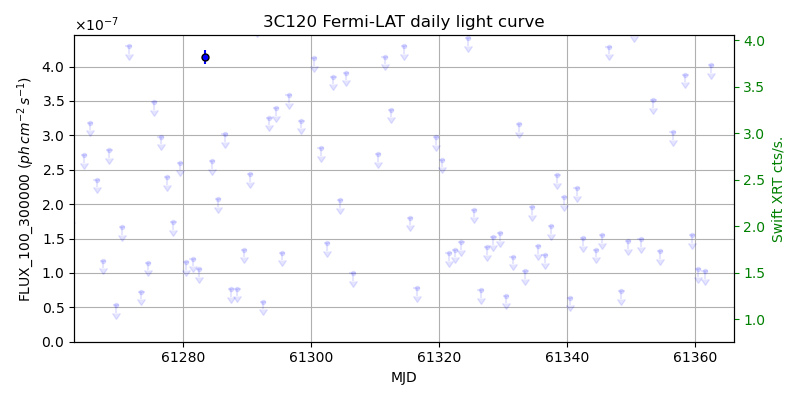
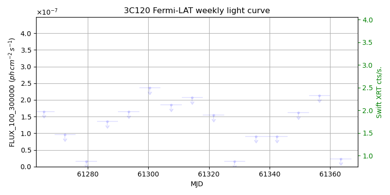

LAT Lightcurve site: https://fermi.gsfc.nasa.gov/ssc/data/access/lat/msl_lc/source/3C_120
Swift site: https://www.swift.psu.edu/monitoring/source.php?source=3C120
NED: Query
Time of last update of this page: UT: 2026-11-20 16:15 (MJD: 61364.677)
| Property | Value |
|---|---|
| R.A. | 4:33:11.04 |
| Dec. | 5:21:14.4 |
| z | 0.033 |
| 3FGL SpectrumType | |
| 3FGL PL Index | -1.00 |
| 3FGL Flux_100_300000 | -1.00e+00 |
| 3FGL Flux_1000_300000 | -1.00e+00 |
| 3FGL Flux >200 GeV | -1.00e+00 |
| 3FGL Extrap. Crab >200 GeV | -1.00 |
| 3FGL Flux After EBL Absorption >200GeV | -1.00e+00 |
| 3FGL EBL Crab Fraction >200GeV | -1.00 |

| MJD | dMJD | Flux | dFlux | Frac3FGL | FracCrab>200GeV | EBLFracCrab>200GeV |
|---|---|---|---|---|---|---|
| 61359.50 | 0.50 | 1.54e-07 | 0.00e+00 | 0.00 | 0.00 | -0.00 |
| 61360.50 | 0.50 | 1.06e-07 | 0.00e+00 | 0.00 | 0.00 | -0.00 |
| 61361.50 | 0.50 | 1.03e-07 | 0.00e+00 | 0.00 | 0.00 | -0.00 |
| 61362.50 | 0.50 | 4.02e-07 | 0.00e+00 | 0.00 | 0.00 | -0.00 |
| 61363.50 | 0.50 | 6.04e-07 | 0.00e+00 | 0.00 | 0.00 | -0.00 |

| MJD | dMJD | Flux | dFlux | Frac3FGL | FracCrab>200GeV | EBLFracCrab>200GeV |
|---|---|---|---|---|---|---|
| 61328.50 | 3.50 | 1.51e-08 | 0.00e+00 | 0.00 | 0.00 | -0.00 |
| 61335.50 | 3.50 | 9.06e-08 | 0.00e+00 | 0.00 | 0.00 | -0.00 |
| 61342.50 | 3.50 | 9.05e-08 | 0.00e+00 | 0.00 | 0.00 | -0.00 |
| 61349.50 | 3.50 | 1.61e-07 | 0.00e+00 | 0.00 | 0.00 | -0.00 |
| 61356.50 | 3.50 | 2.13e-07 | 0.00e+00 | 0.00 | 0.00 | -0.00 |
| MJD | dMJD | Flux | dFlux | Frac3FGL | FracCrab>200GeV | EBLFracCrab>200GeV |
|---|---|---|---|---|---|---|
| 61359.50 | 0.50 | 2.51e-08 | 0.00e+00 | 0.00 | 0.00 | -0.00 |
| 61360.50 | 0.50 | 2.56e-08 | 0.00e+00 | 0.00 | 0.00 | -0.00 |
| 61361.50 | 0.50 | 2.67e-08 | 0.00e+00 | 0.00 | 0.00 | -0.00 |
| 61362.50 | 0.50 | 8.64e-08 | 0.00e+00 | 0.00 | 0.00 | -0.00 |
| 61363.50 | 0.50 | 2.59e-07 | 0.00e+00 | 0.00 | 0.00 | -0.00 |

| MJD | dMJD | Flux | dFlux | Frac3FGL | FracCrab>200GeV | EBLFracCrab>200GeV |
|---|---|---|---|---|---|---|
| 61328.50 | 3.50 | 3.44e-09 | 0.00e+00 | 0.00 | 0.00 | -0.00 |
| 61335.50 | 3.50 | 5.85e-09 | 0.00e+00 | 0.00 | 0.00 | -0.00 |
| 61342.50 | 3.50 | 7.60e-09 | 0.00e+00 | 0.00 | 0.00 | -0.00 |
| 61349.50 | 3.50 | 3.16e-09 | 0.00e+00 | 0.00 | 0.00 | -0.00 |
| 61356.50 | 3.50 | 3.07e-09 | 0.00e+00 | 0.00 | 0.00 | -0.00 |
--------------------------------------------------------- Using user-supplied coords: 4:33:11.04 5:21:14.4 2000 --------------------------------------------------------- FLWO UT night of: 2026-11-21 Local Sid. @ Midnight: 03:37 Sunset (-15.0) (local, UT): 18:33 01:33 Sunrise (-15.0) (local, UT): 05:47 12:47 Moonrise (local, UT): Moonset (local, UT): 03:40 10:40 Moon phase: 0.85 --------------------------------------------------------- AzTime LSID UT Obj_el Obj_az Mn_el Mn_az Sep. --------------------------------------------------------- 18:33 22:09 01:33 -1.5 82.0 47.9 117.4 59.1 19:03 22:39 02:03 4.0 86.0 53.3 125.0 58.9 19:33 23:09 02:33 10.3 89.9 58.2 134.7 58.8 20:03 23:39 03:03 16.6 93.9 62.3 146.9 58.6 20:33 00:09 03:33 23.0 98.1 65.1 162.1 58.4 21:03 00:39 04:03 29.3 102.6 66.3 179.7 58.3 21:33 01:09 04:33 35.4 107.6 65.4 197.5 58.1 22:03 01:39 05:03 41.4 113.4 62.9 213.2 58.0 22:33 02:09 05:33 47.2 120.1 59.0 225.9 57.8 23:03 02:39 06:03 52.4 128.3 54.2 235.9 57.7 23:33 03:09 06:33 57.1 138.5 48.9 243.9 57.5 00:03 03:39 07:03 60.8 151.2 43.2 250.4 57.3 00:33 04:10 07:33 63.1 166.4 37.3 255.9 57.1 01:03 04:40 08:03 63.7 183.1 31.2 260.7 56.9 01:33 05:10 08:33 62.5 199.4 25.1 265.1 56.7 02:03 05:40 09:03 59.6 213.7 19.0 269.2 56.5 02:33 06:10 09:33 55.5 225.5 12.9 273.0 56.3 03:03 06:40 10:03 50.6 234.9 6.8 276.9 56.0 03:33 07:10 10:33 45.1 242.5 1.0 280.7 55.8 04:03 07:40 11:03 39.3 248.8 -4.9 284.7 55.5 04:33 08:10 11:33 33.2 254.3 -11.1 288.8 55.2 05:03 08:40 12:03 27.0 259.1 -16.8 293.2 54.9 05:33 09:10 12:33 20.7 263.5 -22.3 298.1 54.6 05:47 09:25 12:47 17.6 265.5 -24.8 300.5 54.4 --------------------------------------------------------- Dark hours >55 deg.: 0.00